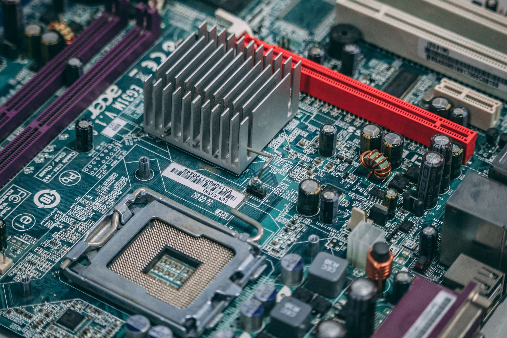

미중 기술 격리 고착화, 한국의 선택 구조

[자료사진] 기사와 무관한 이미지입니다.
- 미중 정상회담에서 AI·반도체 수출통제 합의가 불발됐고 양국 빗장은 유지됐다
- 한국 정부가 반도체·이차전지·첨단소재를 안보와 연계하는 산업·안보 융합전략을 공식 착수했다
- 한국이 미중 사이에서 균형자 역할을 할 수 있는지, 아니면 선택을 강요받는 구조인지는 아직 판단이 어렵다
핵심 질문
미중 기술패권 경쟁이 장기화되는 가운데, 한국 기업의 공급망은 어느 방향으로 압력을 받고 있는가. 미국의 AI칩 수출허가 강화와 중국의 맞대응 핵심광물 통제가 동시에 가속되며 한국 반도체 공급망이 양방향 압박을 받는 구조가 현실화됐다는 분석이 제기된다.
사실과 데이터
미중 정상회담에서 AI·반도체 수출통제와 관련한 합의가 재차 불발됐다. 양국의 첨단기술 빗장은 유지됐으며, 미국은 엔비디아·AMD의 AI 반도체를 전 세계 어느 국가에 수출하더라도 미국 정부 허가를 의무화하는 방향을 추진 중이다.
한국 반도체 업계 내부에서는 '미중 갈등이 없었다면 중국 반도체가 이미 한국 턱밑까지 왔을 것'이라는 자성이 나오고 있다고 한국일보가 전했다. 이는 현재의 경쟁력이 기술 우위만이 아니라 지정학적 보호막에도 의존해 왔다는 의미로 읽힐 수 있다.
한국 정부는 미중 기술패권 경쟁이 장기화됨에 따라 반도체·이차전지·첨단소재를 안보와 연계하는 산업·안보 융합전략을 공식 착수했다. 서울대 국가미래전략원도 관련 포럼을 열어 대응 전략을 논의했다.
구조적 배경
한국은 메모리 반도체 수출의 상당 부분을 중국 시장에 의존하면서 동시에 미국 기술 생태계 안에서 제조하는 이중 구조를 유지해 왔다. 미중 기술 격리가 고착화될수록 이 이중 구조를 동시에 유지하는 비용이 높아질 가능성이 있다.
미중 규제 충돌이 글로벌 반도체 공급망에 미치는 파장은 한국에 위기와 기회를 동시에 던지고 있다는 분석도 있다. 중국이 저가 AI칩으로 파상공세를 펼치면서 ASML 등 서방 반도체 장비 기업의 실적 하방 압력이 현실화되는 상황도 공급망 재편의 속도를 가늠하는 변수다.
가능한 시나리오와 한계
시나리오 하나는 미중 기술 블록이 고착화되며 한국이 미국 진영으로의 완전한 편입을 선택하는 경우다. 이 경우 중국 매출 의존 기업은 대체 시장 확보가 선결 과제가 된다.
또 다른 시나리오는 한국이 전략적 균형외교를 유지하며 양쪽 모두에 납품하는 구조를 지속하는 경우다. 그러나 미국의 수출허가 의무화 범위가 확대될 경우 이 여지가 좁아질 수 있다는 점은 변수다. 현재로서는 어느 시나리오가 현실화될지 공식 확인된 바가 없다.
앞으로 볼 변수
- '미중 기술패권' 시대…정부, 산업·안보 융합 전략 마련 나선다 - 뉴시스 · GoogleNews
- "미·중 갈등 없었다면... 중국 반도체, 한국 턱밑까지 위협했을 것" [인터뷰] - 한국일보 · Google뉴스-미중패권
- 미·중 정상, 타협 없이 패권 경쟁 지속…첨단기술 빗장 유지에 K반도체 ‘안도’ - 경향신문 · Google뉴스-미중패권
- 미중 규제 충돌, 글로벌 반도체 공급망에 파장…韓도 ‘위기와 기회’ - 더구루 · Google뉴스-공급망패권
- 미중 반도체 패권 격돌의 진짜 승자는 -> 기술 장벽 비웃는 차이나 AI 굴기 -> 반토막 난 ASML 실적 경고등 => 대중국 제재 부메랑 맞은 서방 반도체 진영 = 저가형 AI 파상공세 펼치는 중국 > 글로벌 빅테크 수익성 신기루 무너진다 - 데일리머니 · GoogleNews
- AI의 찬란한 폭주와 어두운 그림자 > 기술 패권과 독점, 그리고 보안 패러다임의 대전환 -> 미중 반도체 패권 전쟁 역설과 중국 기술 자립 가속화 현상 분석 - 데일리머니 · Google뉴스-미중패권
이 포스팅은 쿠팡 파트너스 활동의 일환으로 수수료를 제공받습니다.